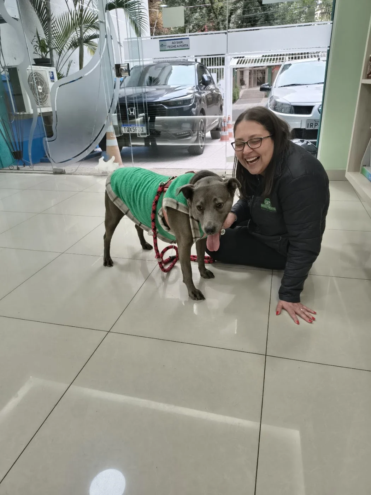
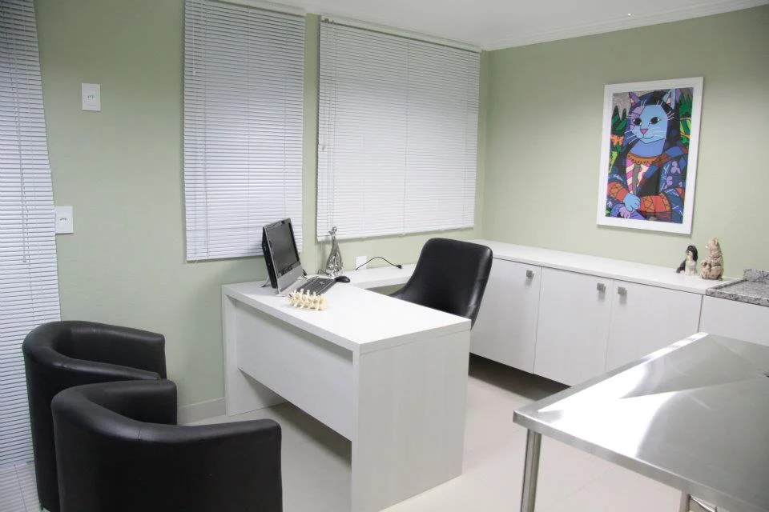

Cardiologia
Avaliação especializada para a saúde do coração.
Consultar atendimentoMAIS SAÚDE. MAIS BEM-ESTAR.
Da pele ao coração, um olhar atento para a saúde do seu pet. Conheça a Mais Bichos, no Bom Fim.

UM OLHAR ESPECIAL PARA A PELE
Na Mais Bichos, a dermatologia veterinária tem lugar de destaque. Um atendimento especializado para investigar alterações da pele, dos pelos e dos ouvidos de cães e gatos.
Conversar sobre dermatologia ↗Coceira frequente, queda de pelos ou desconforto nos ouvidos são motivos para buscar uma avaliação veterinária.
Cada pet tem sua história.
A avaliação orienta os próximos passos.
CUIDADO EM DIFERENTES MOMENTOS
Especialidades, exames e serviços para acompanhar a rotina de quem faz parte da sua família.
Avaliação especializada para a saúde do coração.
Consultar atendimentoAcompanhamento das condições hormonais e metabólicas.
Consultar atendimentoAtenção especializada ao sistema digestivo.
Consultar atendimentoCuidado especializado com os olhos e a visão.
Consultar atendimentoAvaliação do sistema musculoesquelético e da mobilidade.
Consultar atendimentoInvestigação e acompanhamento da saúde com exames.
Consultar atendimentoExames para apoiar a avaliação dermatológica.
Consultar atendimentoDiagnóstico por imagem para complementar a avaliação.
Consultar atendimentoHigiene e cuidado com a pelagem no dia a dia.
Consultar atendimentoProdutos para a rotina e o bem-estar do seu pet.
Consultar atendimentoAs consultas e os serviços dependem de disponibilidade. Entre em contato para confirmar profissionais, horários e condições de atendimento.

Um espaço para cuidar.PRAZER, SOMOS A MAIS BICHOS
No coração do Bom Fim, a Mais Bichos reúne dermatologia veterinária, outras especialidades e serviços para o dia a dia do seu pet.
Um lugar para conversar, tirar dúvidas e encontrar o atendimento adequado para cada momento.
Consulte a cobertura do seu plano, as carências e os procedimentos disponíveis antes do atendimento.
Ver na rede credenciada ↗POR DENTRO DA MAIS BICHOS
Conheça a clínica pelas fotos.
Toque em uma imagem para ampliar.
A CONFIANÇA DE QUEM CONHECE
Conheça as experiências de outros tutores e confira as avaliações completas no Google.
Ver avaliações no Google ↗Fale pelo WhatsApp ou ligue para (51) 3094-3095. Informe o serviço de interesse e consulte os horários disponíveis. A confirmação é feita diretamente pela clínica.
O atendimento avalia a pele, a pelagem e os ouvidos do pet. O veterinário considera a história e as necessidades do animal e orienta se são necessários exames e acompanhamento.
A Mais Bichos consta na rede credenciada Petlove Saúde. Confirme a cobertura do seu plano, carências, procedimentos e disponibilidade com a clínica e a operadora.
Sim, entre em contato para consultar horários, valores e os cuidados adequados para seu pet. Se ele está em acompanhamento dermatológico, informe isso ao solicitar o serviço.
Consulte os horários atualizados pelo WhatsApp ou telefone, especialmente aos sábados e feriados. Este site não exibe disponibilidade em tempo real.
ESTAMOS NO BOM FIM
Converse com a Mais Bichos e encontre o melhor horário para uma visita.
Chamar no WhatsApp ↗COMO CHEGAR
Bom Fim · Porto Alegre — RS
CEP 90035-120